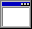

0.- Create your gifo!
 Here Aquí podrás crear tus propios guifos
Crear tu guifo es muy fácil, graba cualquier imagen con tu cámara y obtén guifos personalizados. Los pasos para crear tu guifo son: 1) Dar permisos de acceso a la cámara (sólo por el tiempo de uso) 2) Capturar tu momento guifo 3) Revisar el momento 4) Listo para subir y compartir! ¿Quieres comenzar a crear tu guifo ahora?
1.- Checking your camera device
2.- Recording your gifo
3.- Preview your gifo
4.- Uploading your gifo
5.- Gifo uploaded sucessfully
My uploaded Gifos